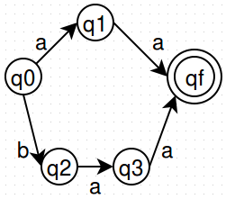

Using CQRS and Event Sourcing Patterns for Improving Performances in Information Systems
Guided by:
Santosh Kumar
Asst. Professor
Seminar by:
Rohith PR
1RN12IS077
Index
- Existing system
- Issues with the state model
- Literature survey
- Proposed system: CQRS and Event sourcing
- Comparision with views
- Event sourcing
- Properties & rules
- Other advantages
- Event sourcing in the real world
- Bibliography
Existing system - State Model

| Transaction Id |
Current State |
| T1 |
qf |
| T2 |
qf |
|
Issues with the existing system
- Data is stored in a large number of tables and joins are expensive
- Many fields of data that has been retreived aren't used
- Events that led to the current state aren't stored
- Separate logging & backup mechanisms are required for regulatory purposes
- Mutable data makes it difficult to implement caching
- Snapshots of the entire database are required for backup
Literature Survey
-
Petar Rajković et al. in Developing and Deploying Medical Information Systems [2] and Software Tools for Rapid Development and Customization of Medical Information Systems [3]
- Critical systems should have redundant servers and databases
- End users should not be exposed to the complications of the system
- Record all events to identify bugs
Literature Survey
(continued)
-
Michael Dippery in Modeling States and Transitions in Relational Databases [4]
- Issues related to recording state transitions and how to overcome them
- Maintain a snapshot at each step
- Have a separate audit log to walk through events
Literature Survey
(continued)
-
Jonathan Oliver in Idempotency Patterns [5] and Event Sourcing and Immutable Data [6]
- Advantages of storing immutable data
- Introduces a message store
Proposed system: CQRS and Event Sourcing
- CQRS: Command and Query Responsibility Segregation
-
Two types of methods:
- Command: void return type, allowed to mutate state
- Query: non-void return type, not allowed to mutate state
CQRS database design
- Divide data store based on access patterns
- Main database: dedicated server for insert, update and delete
- Read database: separate store for select operations
- Denormalized data could be stored in the read database
CQRS Architecture
Relation between service components and major components of database system
Comparision with "views"
- Views may not be available
- Views of a remote database may not be supported
- Control over eventually & strongly consistent reads
- Can be updated on read request
- Timeout mechanism to keep the read database lean
Synchronization Component
- Responsible for updating the read database
- Update upon request improves performance
- Message box stores all changes that have occured to a record since the time it was loaded into the read database
- Strong consistency can be achieved by marking obsolete records
- Eventual consistency can be achieved by using timeouts
- Complex functions can be used rather than just storing a view
CQRS as a starting point
- CQRS Pattern acts as a starting point on top of which different patterns can been implemented
- Event Sourcing is one such pattern
Event Sourcing
Store events rather than state
| Account No. |
Change |
Timestamp |
| 001 |
+600 |
12:13:50-01/01/2016 |
| 002 |
+100 |
13:15:34-01/01/2016 |
| 002 |
+260 |
14:29:59-01/01/2016 |
| 001 |
-100 |
15:40:11-01/01/2016 |
| Account No. |
Balance |
| 001 |
500 |
| 002 |
360 |
Balance is a first level derivative of the events on the account
Properties of the main database
- Updates and deletes lose data - don't use them
- Storage space is cheap; data is expensive
- Use reversals to undo events
- Inserts are used to add new events
- Events are immutable
- No synchronization issues; Scalable
- Immutability leads to cacheability
Use reversals instead of DELETE
2 items added + 1 item removed is not the same as 1 item added
|
|
| User |
Item |
| ABC123 |
1 |
| ABC123 |
2 |
|
|
Projections
- Functions in the synchronization component
- Read the event stream
- Create entities and modify their state
- Store entities in the read database
- Create new projections rather than migrating data
Properties of the Read Database
- State is stored only in the read database
- It is derived and is not just another view of the main database
- Maintain snapshots
| Event Stream |
Snapshot |
| Event 1 |
|
| Event 2 |
|
| Event 3 |
Snapshot 1 |
| Event 4 |
|
| Event 5 |
|
| Event 6 |
Snapshot 2 |
Other advantages
- Use WORM drives to overcome superuser attacks
- Event streams act audit logs
- No need to run migration scripts
- Natural way in which many domains operate
Conclusion and Future work
- All the issues that were initially identified have been solved
- Strong consistency is expensive
- Not suitable when writes to reads ratio is high
- Redundancy when an event belongs to multiple event streams